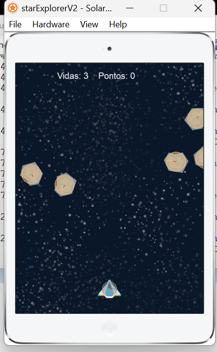
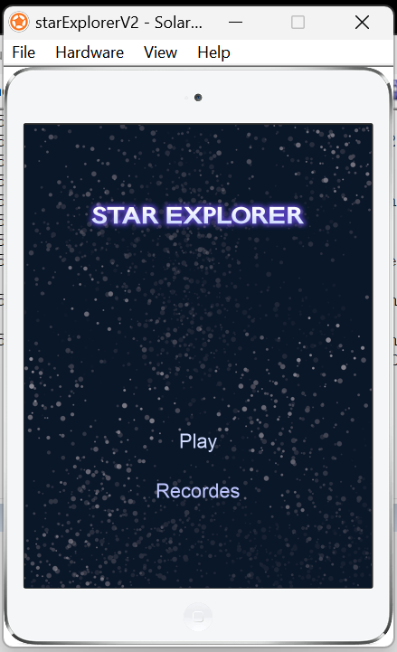

Projeto Lua:
Star Explorer V2:
Nesse jogo aprendemos um pouco sobre as sprites e áudio:

Você pode assistir o video dessa aula nesta página, ou clicar no link abaixo dele para ser redirecionado ao YouTube
Assista no YouTube
Voltar ao ínicio
Link do código no GitHub:
GitHub